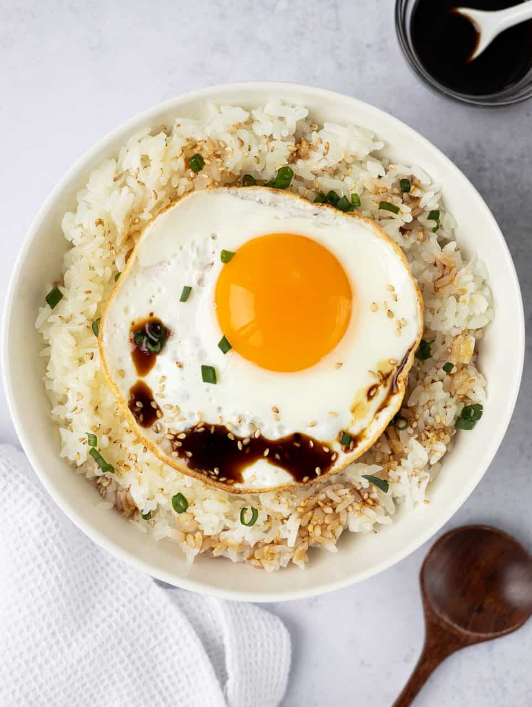

Gyeran Bap (aka Korean Egg Rice)

(Image credit: Christie At Home)
What is this dish?
Another one of my staple comfort foods!
This is another simple but delicious Korean recipe made with just a few ingredients - making this another popular meal amongst college students. It's super easy to make and great for breakfast, lunch, or dinner! It's ready within minutes as long you have some leftover rice.
The core of this dish is rice, egg, and soy sauce but additional seasonings and toppings can vary by household. My mom used to make this with a little butter and gim (dried seaweed/lavor) to make it more savory! You can also make a special soy sauce mixture instead of regular soy sauce to add additional flavor. You can find the recipe here: Seasoned Soy Sauce
Enough with the chit chat though, let's get right to it.
Ingredients
- 1-2 cups cooked rice
- 1 egg
- 1 green onion, sliced
- 1 tablespoon butter
- 1 teaspoon soy sauce (or to taste)
- 1 teaspoon seasame oil (or to taste)
- 1 teaspoon seasame seeds (optional)
- 1 teaspoon cooking oil
- 1 handful crushed gim (dried seaweed/laver) (optional)
Steps
- Heat up your cooked rice so it's warm
- Place your warm, cooked rice in a bowl with the slice of butter on top
- Heat up the oil on a pan on medium heat
- Fry your egg to your liking! Sunny side up, over easy, the choice is yours. I like mine with extra crispy edges so I add more oil and cook over medium high heat with a lid. Just make sure the yolk is still runny!
- Place your cooked egg on top of the butter
- Sprinkle your seasame seeds, green onions, soy sauce, gim, and sesame oil to your liking!
- Mix it all together and enjoy!